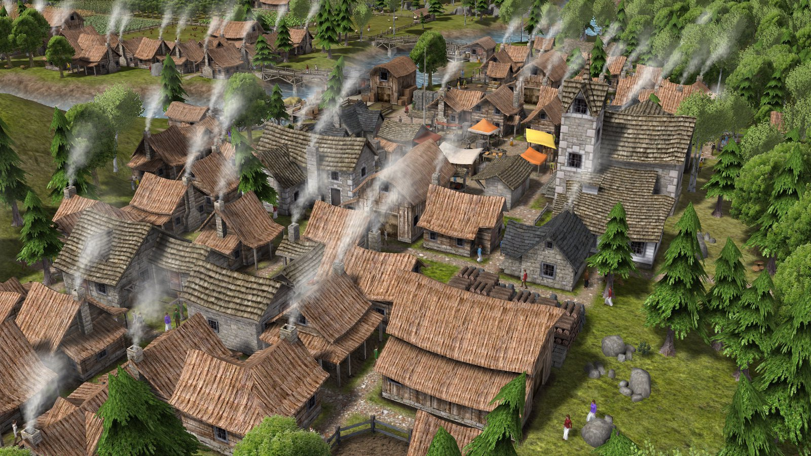
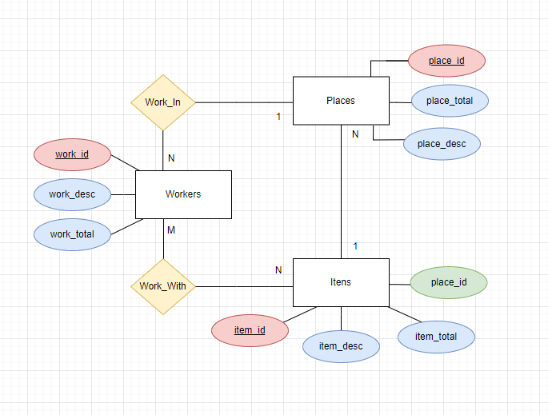
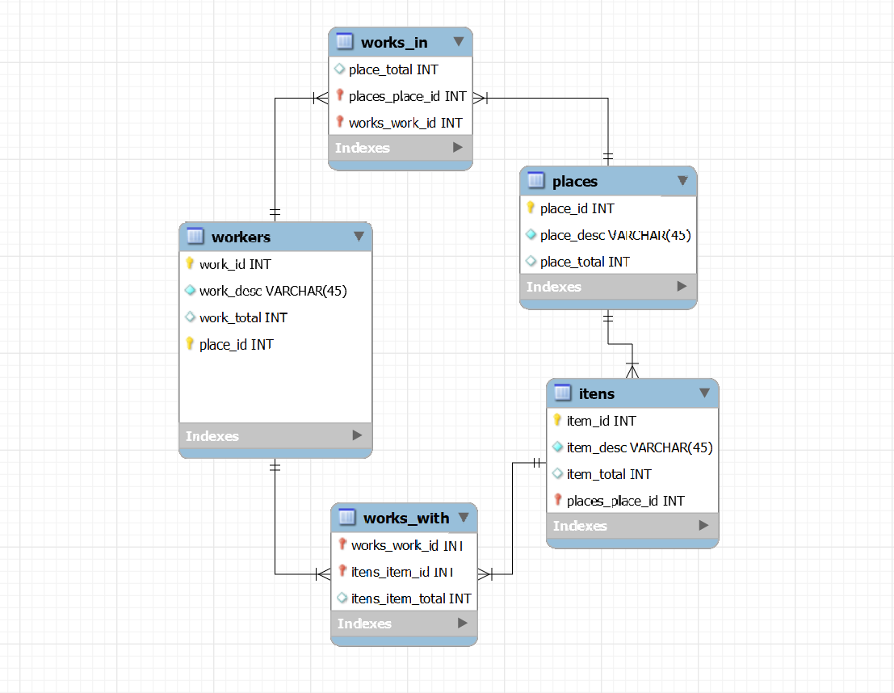
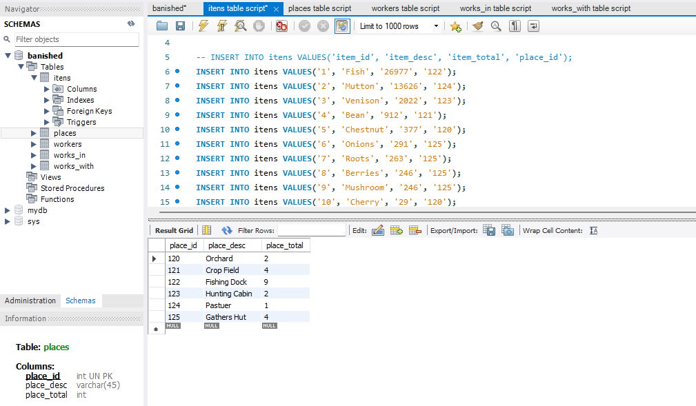
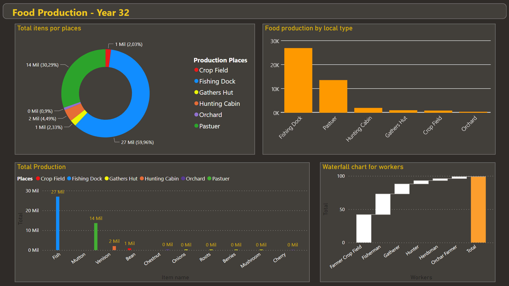

A simple analysis on Banished food production

Banished is a city-building video game developed by Shining Rock Software. It was released for Microsoft Windows on February 18, 2014. The game focuses on careful resource management and survival as an isolated and growing society. Its gameplay can be compared with economic theory on sustainability and optimization.
You can listen the soundtrack game here :)
Therefore, food is one of the most important factors to store in the game, so that citizens do not starve. Food can be produced in: Fishing dock, Crop fields, Orchards, Gatherers, Pastures and Hunting Cabins.
In my current progress, we are in year 32, with a population of 233 citizens.
The image below represents all items stocked in my game. Among them are: work tools, skins, food, seeds, roots, etc...
.png)
However, you can see a little problem here, there is no way to see how much and type of food each area produces; food is organized by quantity only.
In this initial process, the types of data captured were organized across workers, workplaces, and items.

The data processing area is the most technical among the stages. I created an ER diagram sketch using DrawIO to reproduce it as a model in MySQL. Don't forget that every file is available on my GitHub.
 Our script is ready. Finally, we must add the data to the tables, this process can be overwhelming.
Now that we have our database ready, we can create a presentation using PowerBI. By opening the program, we can easily import the tables. Below, you will see the result of this project.
To our king, I can emphasize the importance of focusing on the creation of more fishing and pasture posts. These two workplaces represent, respectively, more than 90% of all food production in this city.
Also, I would recommend disabling the locations: crop field and orchard; they are extremely unproductive and have many allocated workers.
Thanks for following along, this is a simple project I thought of while playing. It was extremely fun to create, and it's clearly a big help for future saves when playing Banished.
All files are availabe on my GitHub profile.